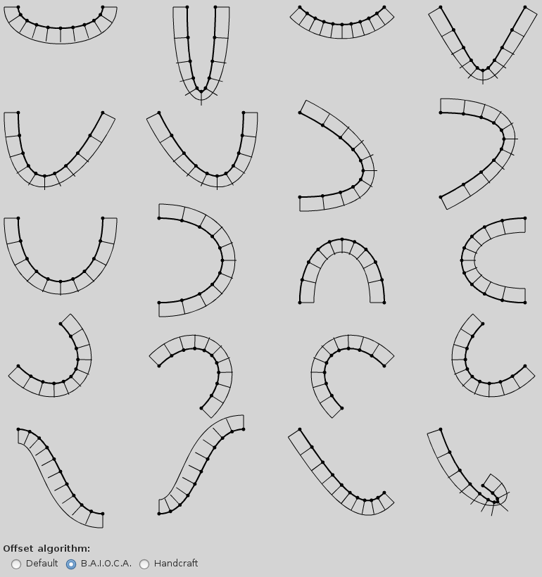
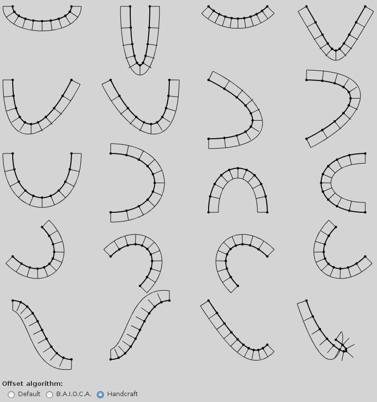

Thu, 26 Mar 2015 08:42:21 +0100
The cross compilation of gobject-introspection from linux to mingw has been proved a really tough task. That project seems an octopus connected at runtime to different part of the system: python, pkg-config, a shell, dlltool and cc. On a standard unix based system all those tools are already installed but when cross-compiling you must build every single piece by yourself.
My first approach was to build everything on the host side (i.e. on mingw-w64). I still think this is the correct way (after all I need to add introspection for packages installed on the host side) but after a lot of trial and error (more errors than trials) I gave up. I was bound continuosly from the build side to the host side and vice versa because of path format, filename mangling and requirements. When I realized I had to build gcc on the host I was fed up. I just tried a precompiled binary and definitively gave up after the umpteenth error.
The second approach was to leverage the tools on the build system by configuring them to work with the paths of the host system. It was not straight-forward but surely much more easier than the previous attempt and, above all, succesful!
The main problem was to build the giscanner python module for the build platform. I resolved building the project twice, as already done by Nicolas Dufresne when cross-compiling for other arch. I then leveraged wine to run host programs on the build side.
The changes on gobject-introspection are relatively few and unobtrusive. They can be pulled from my xbuild branch.
The build is still not as straight-forward as I would. I used a variation of the following (untested) procedure.
export CC=$arch-gcc
export PKG_CONFIG=$arch-pkg-config
export DLLTOOL=$arch-dlltool
export PYTHON=/usr/bin/python2
export GI_OS_NAME=nt
export INTROSPECTION_LAUNCHER="/usr/bin/env WINEARCH=win$bits WINEPREFIX=$srcdir/win$bits DISPLAY= /usr/bin/wine"
export XDG_DATA_DIRS="/usr/$arch/share:$XDG_DATA_DIRS"
export GI_TYPELIB_PATH="/usr/$arch/lib/girepository-1.0:$GI_TYPELIB_PATH"
# First pass: build the giscanner Python module with build == host
./configure \
--disable-silent-rules \
--enable-shared \
--enable-static
make scannerparser.c _giscanner.la
# Second pass: build everything else with build != host (i.e. cross-compile)
./configure \
--build=... \
--host=... \
--prefix=... \
--disable-silent-rules \
--enable-shared \
--enable-static \
--disable-doctool \
--disable-giscanner
# Avoid overriding what built in the first pass
make -t scannerparser.c _giscanner.la
make INTROSPECTION_LAUNCHER="$INTROSPECTION_LAUNCHER"
In the real world I built the project on ArchLinux as part of a toolchain for cross-compiling GTK+2 and GTK+3 applications. The build script can be browsed on its dedicated PKGBUILD.
Sun, 26 Oct 2014 07:57:11 +0100
While working on the ADG, we implemented BAIOCA, a new algorithm for offsetting Bézier cubic curves. It finds the offset curve by imposing some obvious constraint and by minimizing the mean square error between the original curve and the offset curve at the same time value.

By visually inspecting the results, it seems the algorithm performs better than handcraft (the previous algorithm) in the edge cases (latest 4 images on the screenshots) but overall it performs worse on the other cases (above all, image 2 and 4).

I think the algorithm is theoretical correct but the additional phantom
constraint at the same time value
(implied to be able to solve
the system) must be blamed. This is confirmed by the fact that when
increasing the samples the offset curve must fit, the quality of the
result decreases. This counterintuitive behavior makes sense if you
think that additional phantom constraints worsen the result.
Sun, 07 Sep 2014 09:35:41 +0200
A common pattern is to use Lua tables as arrays: there is no other data structure so
the choice is imposed. This does not usually pose any problem apart the fact you
cannot store nil
values in tables blindly.
However, when populating with millions of items, using Lua tables becomes a
performance issue because the length operator has O(n) complexity.
table.insert, the obvious candidate for such operation, has the worse
performance. Directly using v[#v+1] avoids a call but still suffers from
the O(n) problem. The proper solution is to avoid relying on the lengh operator by
keeping a separate pointer or directly use the iterator variable of the cycle.
$ time lua -e 'a = {} for n = 1, 10000000 do table.insert(a, n) end'
real 0m3.218s
user 0m3.173s
sys 0m0.040s
$ time lua -e 'a = {} for n = 1, 10000000 do a[#a+1] = n end'
real 0m2.656s
user 0m2.623s
sys 0m0.027s
$ time lua -e 'a = {} for n = 1, 10000000 do a[n] = n end'
real 0m0.435s
user 0m0.403s
sys 0m0.027s
Wed, 18 Jun 2014 22:44:54 +0200
Lately I am working quite intensively with the Lua programming language. I will have to deploy the final system on different linux distros, mostly Debian 7 (Wheezy) 64 bits, so I decided to install it together with the Lua packages it depends on by leveraging the natural deployment system provided by the Lua ecosystem, that is LuaRocks.
In short: the official LuaRocks package found in Debian repositories is 2.0.9 and it has a bug that prevented me to use it successfully. I rebuilt and packaged LuaRocks for Debian Wheezy using the latest compatible release (2.0.13) leaving almost all the old settings but depending on Lua 5.2 instead of Lua 5.1. Hopefully it will be useful to others.